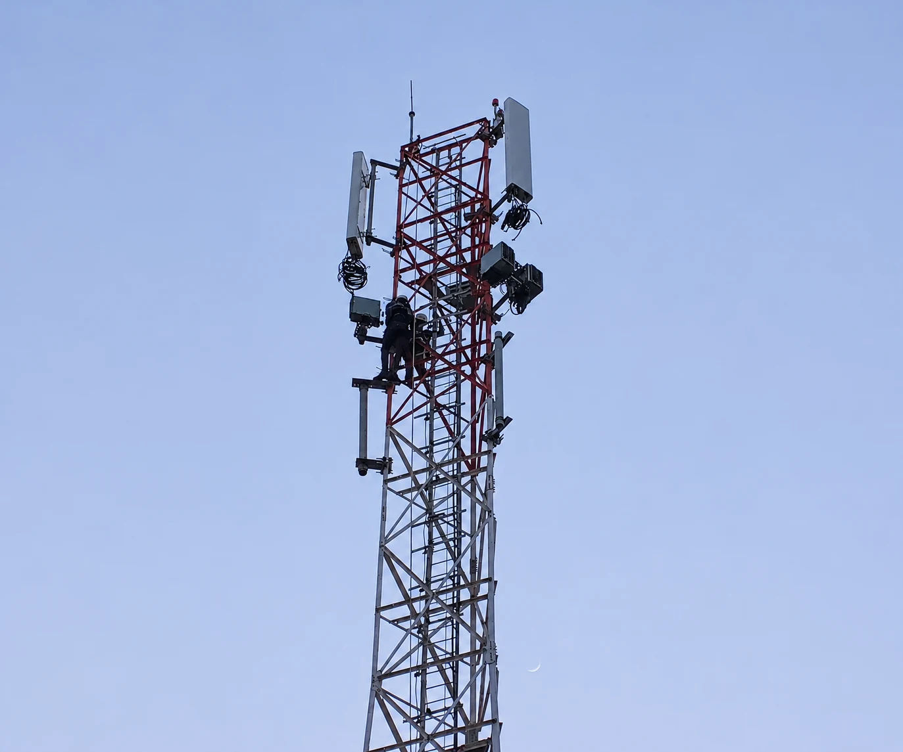

Compreender
Ouvimos as suas necessidades e analisamos as condições que o projecto deve respeitar.
Das infra-estruturas no solo ao sinal no ar. Reunimos pessoas, experiência e tecnologia para construir o próximo passo.
A JAL TELECOM coloca a experiência prática das suas equipas ao serviço das infra-estruturas de telecomunicações em Angola. Transformamos planos de rede em ligações concretas, através da instalação, integração e assistência técnica contínua.
Das infra-estruturas dos sites à assistência contínua, conheça as competências que apoiam a sua próxima ligação.

01A base de cada ligação. Implementação de sites e apoio às infra-estruturas físicas de que dependem as redes de telecomunicações.
Conhecer este serviço 02Instalação e integração de equipamentos rádio, antenas e ligações de micro-ondas entre sites.
Conhecer este serviço 03Apoio à instalação de fibra óptica e à conectividade das ligações físicas que sustentam as comunicações modernas.
Conhecer este serviço 04Assistência técnica no terreno, verificação de equipamentos e apoio à manutenção de infra-estruturas de telecomunicações.
Conhecer este serviço 05Uma abordagem integrada às necessidades de conectividade e infra-estruturas de telecomunicações das empresas.
Conhecer este serviçoSites, transmissão, fibra e assistência técnica funcionam em conjunto. Conhecemos a forma como estes elementos se articulam no terreno.
Fotografias de campo que mostram as pessoas e os equipamentos por detrás do trabalho.


Um bom trabalho de engenharia começa por ouvir, definir o âmbito do projecto e cuidar dos pormenores.
Ouvimos as suas necessidades e analisamos as condições que o projecto deve respeitar.
Definimos consigo o âmbito técnico, as responsabilidades e um plano de execução adequado.
A nossa equipa de campo concretiza os requisitos de instalação e integração.
Mantemos o diálogo para responder às necessidades de manutenção e assistência técnica.

Por detrás de cada instalação está uma equipa. Levamos conhecimento prático, colaboração e cuidado na execução a cada desafio que nos é apresentado.
Conheça a nossa equipaPartilhe os seus planos. Vamos encontrar o caminho mais adequado.